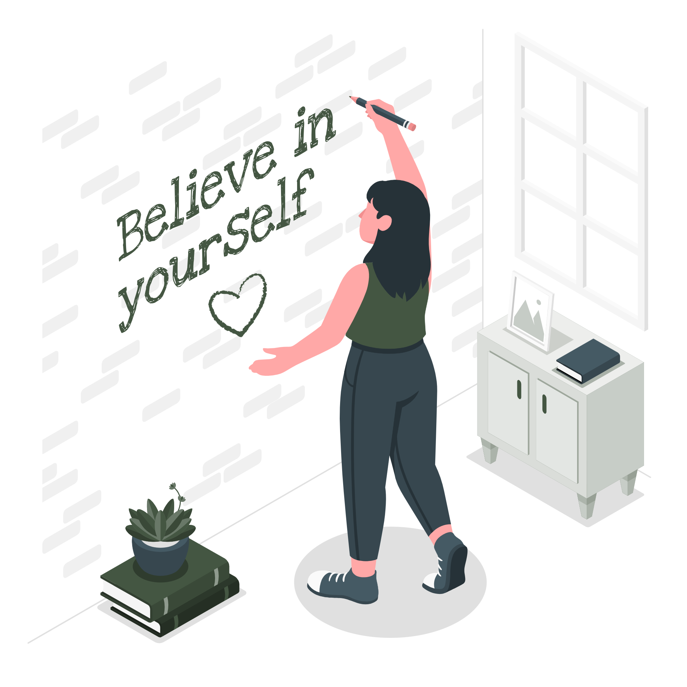

Hi there, my name is Joe and welcome to my learning journal.
After dabbling in the Frontend Developer Career Path, I have
made the big jump over to the bootcamp to get expert code reviews of solo projects
and meet like-minded peers.
How I stay committed to learning
I view each day as an opportunity to learn something new and, in the context of web development, to apply this new-found knowledge to projects.
This learning journal is an opportunity to share my learning with others who may, hopefully, benefit from it.
How I got started
My process is that I read an article on web development, think about it and then write it out in my own words: this writing in your own words bit is very important.
I find this really helps concepts "stick" and mature in my mind.
The above process has really helped to make my understanding of web development more mature and nuanced; this combined with the realisation
that my musings could help others learn and stay motivated provided more reasons for me to keep
advancing, thereby creating a virtuous circle of collective learning.
If you think you can't write, just start and it will improve; also, how you conceptualise and therefore write out your thoughts is what will make your
neural networks grow.
Recent Posts
Flexbox Alignment Properties
Properties for main-axis alignment.
justify-content allows you to easily align items along the main axis and distribute space between same with just one line of code. You can align items at the start and end of the main axis with flex-start and flex-end, and center items with the center property; space-between, space-around and space-evenly distributes space between and at either end of flex items along the main axis. Again, I like to see both the main and cross axis running through flex items as a string which holds them together and which can expand or contract like an elastic band, thereby pulling said items together or spreading them apart.
Properties for cross-axis alignment.
align-items allows you to align flex items along the cross axis. The default for this property is stretch, which means that the item will span the cross axis. When you set this property to center, the flex-item will center along the main axis, and this combined with justify-content: center provides an easy way to both horizontally and vertically align flex items. You will mostly use flex-start, flex-end and center for this property.
Flex lines – either in a row or column - are treated as isolated from other flex lines within a flex container and will not align individual flex items with one another as cells within a grid container will align at the intersection of a row and column; however, the align-content property allows you to distribute space between flex lines if such exists within the flex container and if flex-wrap is set to wrap, which means that the flex lines will wrap onto a new line if they exceed the size of their flex container.
The align-self property allows you to individually align a flex-item along the cross axis and will override any align-items value that may be set.

Flex Grow, Flex Shrink and Flex Basis
The above properties provide powerful methods to apply different ratios to the growth or shrinkage potential of flex items relative to one another when there is positive free space or lack thereof within a flex container.
flex-grow’s default value is 0, which means that the flex-item will not grow even if there is available space in the flex container; if you set this property to a value higher than zero, the flex-item will grow in proportion to the positive values, if any, set on the other flex items. E.g., if one flex item has a flex-grow property set to 2 and the other three items are set to 1, the first item will assume twice as much of the available space as its three siblings. How the flex algorithm calculates this is it first calculates the combined size of the four flex items and then calculates the remaining free space after deducting the space to be allocated to the flex-items from the overall space within the flex container. The free space is then allocated pro-rata according to the flex-grow values.
flex-shrink’s default value is 1, meaning that flex-items will by default shrink if they overflow their container. How the flex algorithm calculates the distribution of negative space is slightly different to how positive space is proportioned. Like above, the algorithm will deduct the total size of the flex-items from the overall size of the flex container to determine the amount of negative space, which will result in a negative number if the flex-items are overflowing their container. The flex-basis (which will be expanded on below) property is used to calculate the starting size of a flex-item, hence the term “flex-basis.” If flex-basis is set to auto, the flex-item’s size will be based on its content (its intrinsic size) or if there is an explicit width/height value. The flex algorithm will then multiply the flex-shrink factor by the flex-basis thus ensuring that larger items will shrink more than smaller ones thereby maintaining proportionality among same.
flex-basis, which was touched upon above, can also be set to 0, which means that the flex algorithm will distribute the overall space within the container to the flex-items based on the flex-grow or flex-shrink factors alone; this can result in more equitable distribution of positive or negative space as the size of the flex-item is not considered when proportioning same.
CSS Grid
If you want to layout elements in a two-dimensional, responsive manner (i.e., rows and columns) then CSS Grid is the tool to use. CSS Grid is like an array of columns and rows into whose cells content can be placed and new stacking contexts can be applied with z-index.
To create a grid container, you declare display: grid or inline-grid (which make the grid container act like a block-level or inline element, respectively, in relation to surrounding elements) on an element whose children will then automatically become grid items.
Grid tracks (columns and rows) can be set with fixed-unit widths/heights or with responsive units such as percentages or the “fr” unit, which is unique to grid. The properties, grid-template-columns and grid-template-rows allow us to define the so-called explicit grid. Any overflow grid items will be placed in the so-called implicit grid. This is what helps make CSS Grid such an excellent tool for responsive layouts where the content can be updated without the need for constantly updating grid track values to accommodate same. E.g., if I were to set grid-template-columns to 2fr 1fr 1fr and grid-auto-rows to 10%, then the grid algorithm would create a grid of three columns with the space for same being divided into 2 + 1 + 1 = 4 portions of equal size; therefore, the first column would be allocated two portions and its two siblings one each of available space; any implicit rows would then take up 10% each of the grid container’s height.
In this website I have combined CSS Grid with media queries which dynamically adjusts the number of columns at different screen sizes. At small screen sizes I have applied grid-template-columns: repeat (1, 1fr) which means that CSS Grid will apply one column at screen sizes up to 799px; at screen sizes between 800px and 999px I have set this value to repeat (2, 1fr) which will result in a grid of two columns with each column taking up an equal portion of space; finally, at screen sizes of 1200px and larger, I have applied a value of repeat (auto-fit, minmax(18.75rem, 1fr)) which will fit as many columns as possible with a minimum size of 300px (18.75rem) and which can stretch at an equal ratio to fill any remaining horizontal space.
I have just briefly outlined the capabilities of CSS Grid in this post; I will be delving deeper into this excellent layout tool in future posts.